EVIDENCIAS
Así desarrollamos nuestro trabajo
Algunas fotografías de las actividades realizadas durante nuestro proyecto.


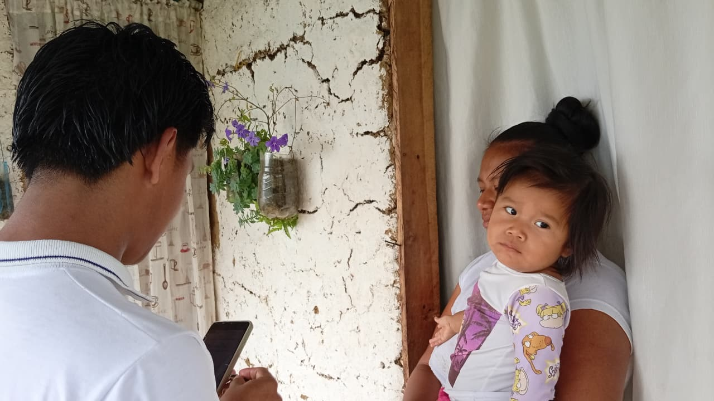
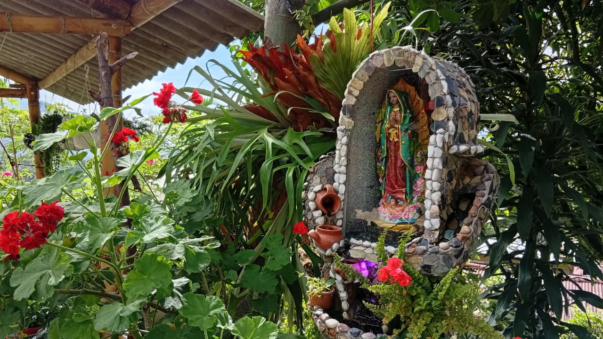
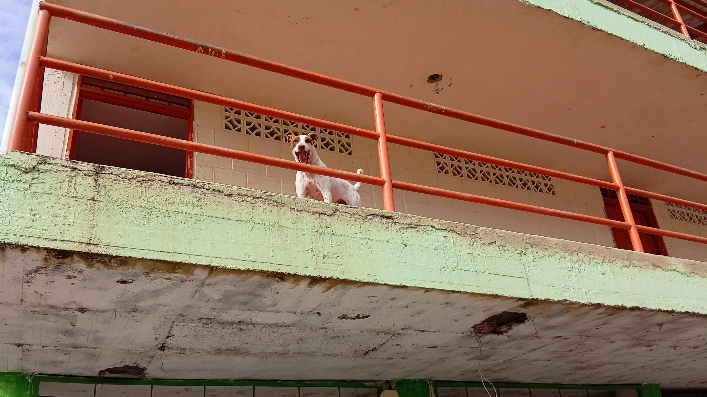
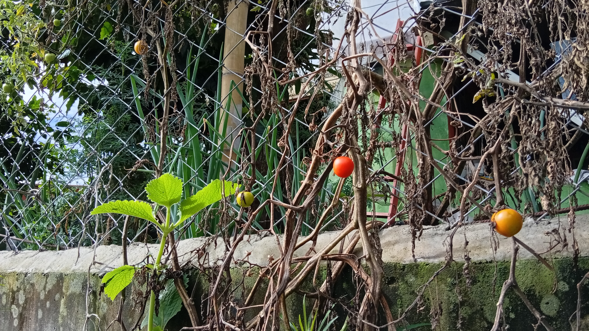
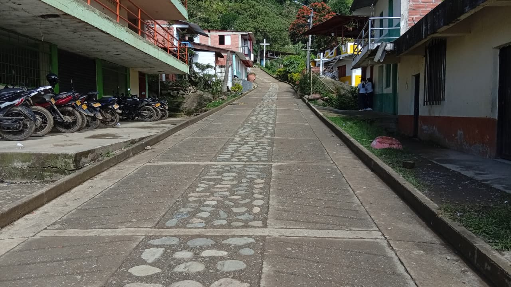
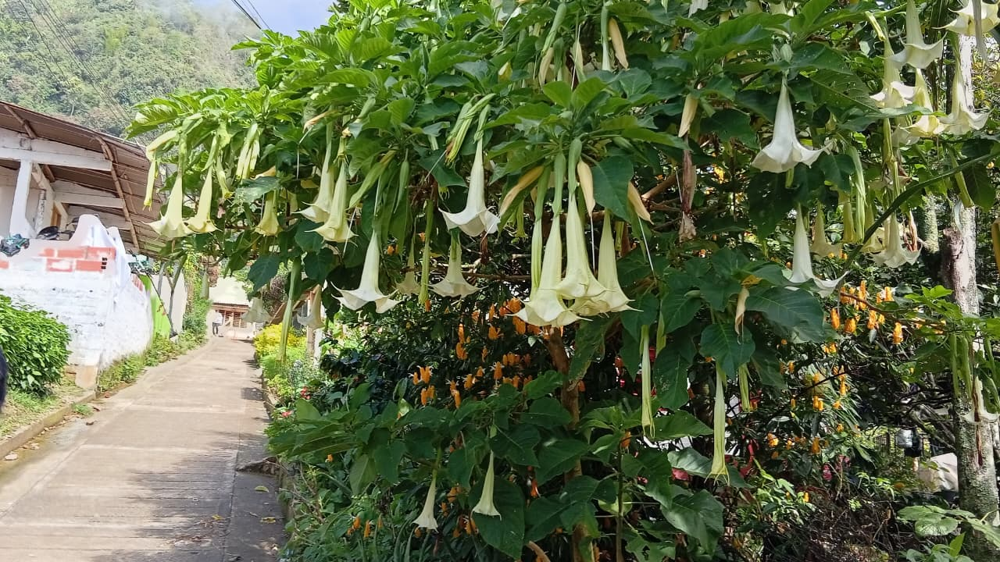
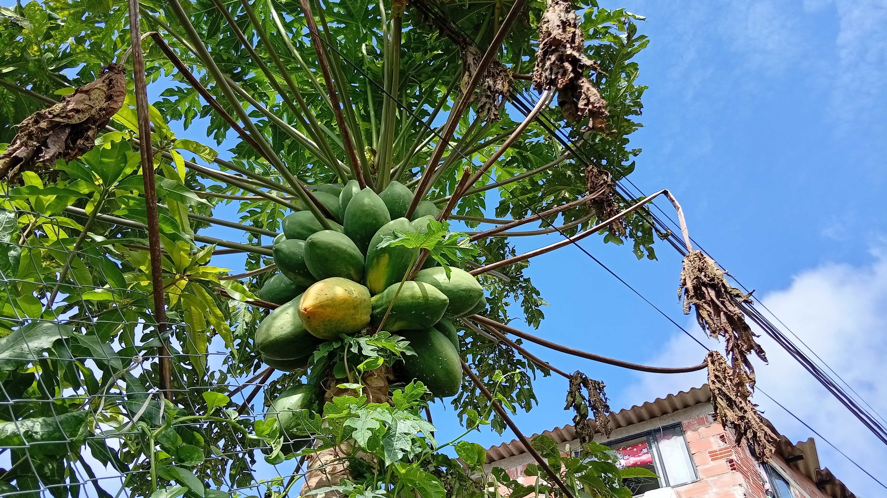
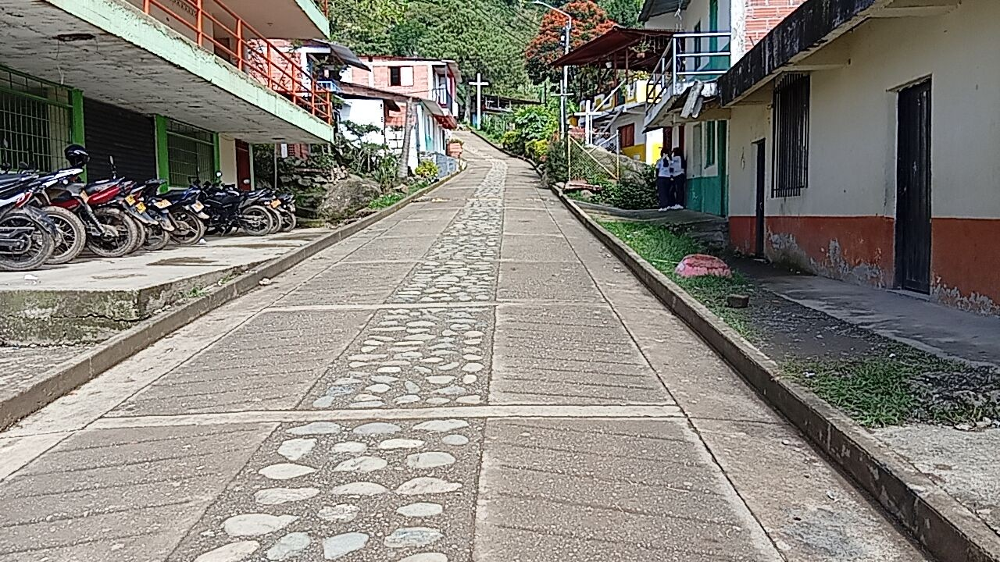
SABORES DE NUESTRA TIERRA
Arepa de choclo
Conozcamos paso a paso la preparación de esta tradición de nuestro territorio.
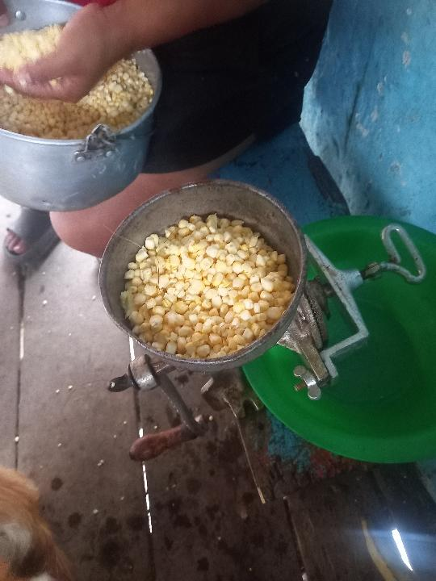
1. Molida del maíz
Comenzamos moliendo los granos de maíz.
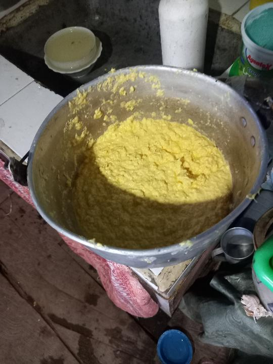
2. La masa del maíz
Obtenemos la masa después de moler el maíz.
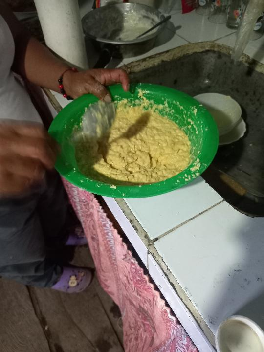
3. La mezcla
Preparamos y mezclamos los ingredientes.
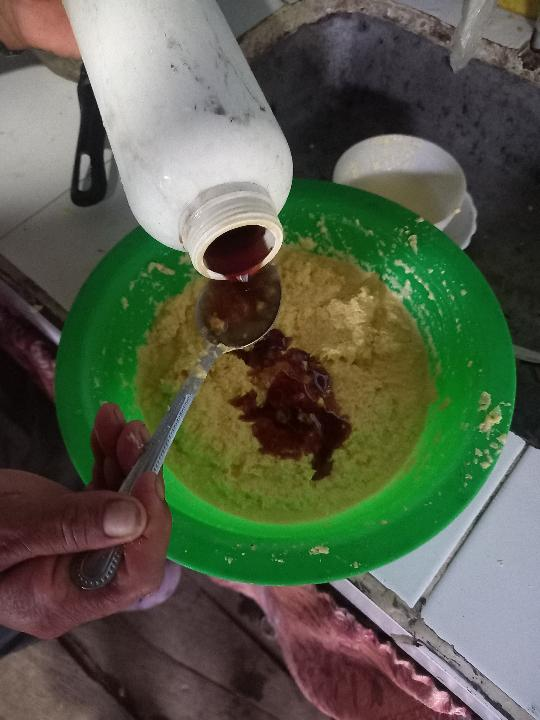
4. Agregamos la miel
Incorporamos la miel a la preparación.
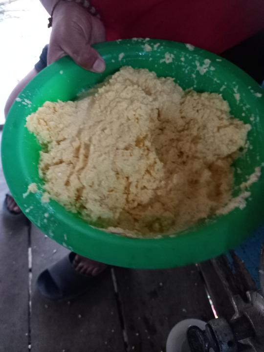
5. Mezcla final
Revolvemos la mezcla junto con la miel.
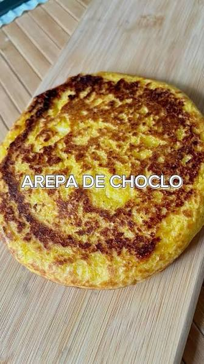
6. Nuestra arepa de choclo
Este es el resultado final, presentado como una torta de cumpleaños.
NUESTRO TRABAJO
Conociendo nuestras raíces
En este video compartimos algunas experiencias, actividades y aprendizajes de nuestro proyecto sobre la soberanía alimentaria en San Lorenzo.